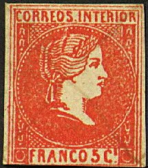
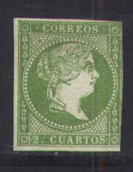
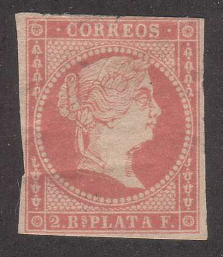
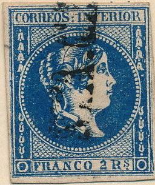

Filipinas - Philippinen
Return To Catalogue - Philippines 1854-1855 - 1871-1881 issues - 1882-1900 issues - Japanese occupation during World War II - Phillipines miscellaneous
Note: on my website many of the
pictures can not be seen! They are of course present in the
catalogue;
contact me if you want to purchase it.
inscription "CORREOS INTERIOR"
5 c red (4 main types) 10 c red (2 main types) 1 r violet 2 r blue
Value of the stamps |
|||
vc = very common c = common * = not so common ** = uncommon |
*** = very uncommon R = rare RR = very rare RRR = extremely rare |
||
| Value | Unused | Used | Remarks |
| 5 c | R | R | Cheapest type |
| 10 c | R | R | Cheapest type |
| 1 r | RRR | RRR | |
| 2 r | RRR | RRR | |
Overprinted 'HABILITADO POR LA NACION' (1869)


5 c red 10 c red 1 r violet 2 r blue
Value of the stamps |
|||
vc = very common c = common * = not so common ** = uncommon |
*** = very uncommon R = rare RR = very rare RRR = extremely rare |
||
| Value | Unused | Used | Remarks |
| 5 c | RR | R | Cheapest type |
| 10 c | RR | RR | |
| 1 r | RRR | RRR | |
| 2 r | RRR | RRR | |
Inscription 'CORREOS'


1 R PLATA F green (2 types)
Value of the stamps |
|||
vc = very common c = common * = not so common ** = uncommon |
*** = very uncommon R = rare RR = very rare RRR = extremely rare |
||
| Value | Unused | Used | Remarks |
| 1 r | RR | RR | Both types |
Overprinted 'HABILITADO POR LA NACION' (1869)

1 r green
Value of the stamps |
|||
vc = very common c = common * = not so common ** = uncommon |
*** = very uncommon R = rare RR = very rare RRR = extremely rare |
||
| Value | Unused | Used | Remarks |
| 1 r | RR | R | Both types |


For issues in similar types, see Spanish Antilles and Spain.
A Parrilla cancel
Yloylo cancel.
An excellent website on the forgeries of this serie can be found at: http://nigelgooding.co.uk/Spanish/Isabella/isabella.htm or http://nigelgooding.co.uk/Spanish/Amadeo/amadeo.htm
Examples of forgeries:
The little dot should be behind the "S" of "RS" and not below it as in the above forgery of the 2 rs value. The cancel is a typical 'forgers-cancel'. I believe the 10 c next to it is a forgery made by the same forger.

In the above forgery the "C" of "CORREOS" is too far to the left. There are some other differences in the lettering (for example the last "R" of "INTERIOR" is too broad at the bottom. It seems that this forgery also exist with cancel (see for example the 10 c forgery above with a cancel consisting of lines).

This forgery has the 'F' of 'FRANCO' too far to the right and the
'C' of 'CORREOS' too far to the left. I've also seen it with a
diamond like numeral cancel '30'; see second image or:
http://nigelgooding.co.uk/Spanish/Forgeries/Isabella/1863-10cuartos.htm.
The 2 Rs forgery was made by the same forger. These forgeries
often carry a typical 'VF' cancel that
can be found on forgeries of many other countries.


(Other forgeries)

Forgery, text at the bottom differently spaced and vertical line
behind "O" of "INTERIOR" and in front of
first "R" of "CORREOS".
Forgery of the 10 cs stamp with the head of the Queen different
and the lettering too small.
Very likely a forgery, no dot under the "s" of
"Rs".

A very dubious item...

Picture obtained from http://nigelgooding.co.uk/
The above forgery with overprint "FALSCH" (='forged' in German) was made by Senf. It is not very dangerous with the "FALSCH" overprint and was not intended to deceive. It was given as an art supplement with a journal issued by Senf. However, some clever forgers have applied cancels to this forgery, in order to cover this word (see for an example the above mentioned website).


Sperati forgeries of the 1 r value (reproductions A and B).


Sperati forgery of the 2 r value. There is a spot of color in the
central circle (under the first "R" of
"INTERIOR") as in the genuine stamp from which Sperati
based his forgery.
Sperati made forgeries of the 1 r and 2 r stamps, unused and used. The paper is thicker than the genuine stamps and is also more yellowish (the genuine stamps have more greyish paper). Sperati made two types of the 1 r stamp (reproduction A and B). In both types, the top of the "S" of "CORREOS" is faulty. he "T" of "INTERIOR" has no bottom left serif. The "O" of this word has a break in the lower left part. The word "FRANCO" also has some defects, such as a small coloured dot on the upper left part of the "C" and white spots in the upper right hand side of the "O" of this word. In reproduction B, the loop and right foot of the second "R" in "CORREOS" are separated from the vertical left part of this letter. Also, in reproduction B, he upper right part of the "T" of "INTERIOR" is separated from the rest of this letter.
3 1/8 c black on yellow 6 2/8 c green on red 12 4/8 c blue on red 25 c red
Similar stamps were issued in Spain and the Spanish Antilles.
Value of the stamps |
|||
vc = very common c = common * = not so common ** = uncommon |
*** = very uncommon R = rare RR = very rare RRR = extremely rare |
||
| Value | Unused | Used | Remarks |
| 3 1/8 c | *** | ** | |
| 6 2/8 c | *** | *** | |
| 12 4/8 c | *** | *** | |
| 25 c | *** | *** | |
Overprinted 'HABILITADO POR LA NACION' (1869)

3 1/8 c black on yellow 6 2/8 c green on red 12 4/8 c blue on red 25 c red
Value of the stamps |
|||
vc = very common c = common * = not so common ** = uncommon |
*** = very uncommon R = rare RR = very rare RRR = extremely rare |
||
| Value | Unused | Used | Remarks |
| 3 1/8 c | *** | *** | |
| 6 2/8 c | *** | *** | |
| 12 4/8 c | R | *** | |
| 25 c | R | *** | |
Forgeries exist, example:


I suspect this to be Segui forgeries, the
second "R" of "CORREOS" is larger. A similar
Segui forgery with large "R" of the 3 1/8 c value also
exists.

More information on forgeries of these stamps can be found at http://nigelgooding.co.uk/Spanish/Forgeries/Isabella/1864-25centimos.htm. Five forgeries of the 3 1/8 c value, four forgeries of the 6 2/8 c, three crude forgeries of the 12 4/8 c (all three rather crude) and four of the 25 c are described on this site.
For issues of the Philippines from 1871 to 1881, click here.


{kind=link}
{kind=link}
{kind=link}
{kind=link}
{kind=link}